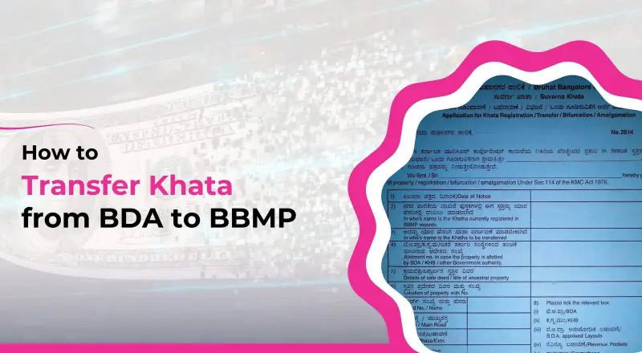

BDA Khata Transfer: A Complete Guide
A BDA (Bangalore Development Authority) Khata is a crucial document that officially records property ownership for properties falling under BDA jurisdiction in Bangalore. Unlike properties managed by BBMP (Bruhat Bengaluru Mahanagara Palike), BDA properties have a separate Khata system administered by the Bangalore Development Authority.
The BDA Khata serves as a comprehensive record that contains vital information about your property including dimensions, location, built-up area, property usage, and ownership details. This document is essential for various purposes such as property tax payments, property transactions, loan applications, and obtaining construction permissions.
Why This Guide Matters
Understanding the BDA Khata transfer process is crucial for property owners in Bangalore. This guide demystifies the process and helps you navigate through the various requirements to ensure your property ownership is legally recognized by the BDA.
Importance of BDA Khata
The BDA Khata is more than just a document - it's the official recognition of your property ownership for properties under BDA jurisdiction. Here's why it holds significant importance:
Legal Proof of Ownership
The Khata serves as an official record that establishes your legal ownership of the property in the eyes of the Bangalore Development Authority.
Property Tax Payments
It enables you to pay property taxes to the BDA, ensuring compliance with local revenue regulations.
Property Transactions
A valid Khata is necessary for selling, purchasing, or transferring property ownership within BDA limits.
Loan Applications
Financial institutions require the Khata certificate as proof of ownership when processing loan applications against the property.
Utility Connections
Obtaining water, electricity, or other utility connections requires a valid Khata certificate.
Without a properly transferred Khata, you may face various legal and administrative challenges that could affect your property rights and transactions in Bangalore.
When Is BDA Khata Transfer Required?
BDA Khata transfer becomes necessary in several situations. Understanding these scenarios will help you initiate the transfer process at the appropriate time:
| Scenario | Description |
|---|---|
| Property Purchase | When you buy a property in a BDA layout, the Khata needs to be transferred from the seller's name to yours. |
| Inheritance | If you've inherited property from a family member, the Khata must be updated to reflect your ownership. |
| Gift Deed | When property ownership changes through a gift deed, a Khata transfer is required. |
| Property Division | If a property is divided among family members through a partition deed, separate Khatas need to be created. |
| BDA Allotment | After receiving allotment of a BDA site, you need to obtain a new Khata in your name. |
Important Note
It's advisable to initiate the Khata transfer process as soon as the property ownership changes. Delaying the process may lead to complications in property tax payments and future transactions.
Documents Required for BDA Khata Transfer
The documentation process is a critical aspect of BDA Khata transfer. Ensure you have the following documents ready before initiating the application:
- Sale Deed or Title Document: The registered document that proves the transfer of property ownership.
- Previous Khata Extract: The existing Khata extract in the seller's name.
- Encumbrance Certificate: A document that confirms there are no legal claims or liabilities against the property.
- Property Tax Receipts: Proof of property tax payments up to the current financial year.
- BDA Allotment Letter: If the property was directly allotted by BDA.
- Identity Proof: Aadhaar card, voter ID, or passport of the new owner.
- Address Proof: Document proving the residential address of the new owner.
- Photographs: Passport-sized photographs of the new property owner.
- NOC from Previous Owner: No Objection Certificate from the previous owner (in some cases).
- Possession Certificate: Document showing legal possession of the property.
Document Verification
All documents should be self-attested, and you may need to produce original documents for verification at the BDA office.
Step-by-Step BDA Khata Transfer Process
The BDA Khata transfer process involves several steps that need to be followed meticulously. Here's a comprehensive guide to help you navigate through the process:
-
Document Collection
Gather all the required documents mentioned in the previous section. Ensure that all documents are complete, valid, and properly attested.
-
Application Form
Obtain the Khata transfer application form from the BDA office or download it from the official BDA website. Fill it with accurate details about the property and new ownership information.
-
Payment of Fees
Pay the prescribed Khata transfer fee at the BDA office. The fee amount varies depending on the property value and other factors, typically ranging from 2% to 5% of the guidance value.
-
Submission of Application
Submit the completed application form along with all supporting documents and fee receipt to the designated BDA officer.
-
Field Verification
The BDA officials may conduct a field visit to verify the property details mentioned in your application.
-
Application Processing
The application undergoes scrutiny and processing by the BDA officials. This may involve cross-verification with land records and property tax registers.
-
Approval and Issuance
After successful verification, the BDA approves the Khata transfer and issues a new Khata certificate and extract in the new owner's name.
Processing Time
The entire process typically takes 30-45 days, depending on the workload at the BDA office and the complexity of your case.
Common Challenges and Solutions
Several challenges may arise during the BDA Khata transfer process. Being aware of these challenges and their solutions can help you navigate the process more effectively:
Incomplete Documentation
Challenge: Missing or incomplete documents can delay the process.
Solution: Prepare a comprehensive checklist of required documents and verify each document's completeness before submission.
Property Tax Dues
Challenge: Pending property tax payments can hinder the Khata transfer.
Solution: Ensure all property taxes are paid up to date before applying for the transfer. Request tax payment history from the BDA.
Discrepancies in Property Details
Challenge: Differences between actual property details and records can cause complications.
Solution: Conduct a thorough verification of property records and address any discrepancies before initiating the Khata transfer process.
Bureaucratic Delays
Challenge: Administrative delays at the BDA level can prolong the process.
Solution: Maintain regular follow-ups with the BDA officials and keep track of your application status.
Ownership Disputes
Challenge: Disputes regarding property ownership can halt the transfer process.
Solution: Resolve any ownership disputes through legal channels before applying for Khata transfer.
Tips for a Smooth BDA Khata Transfer
Follow these practical tips to ensure a hassle-free BDA Khata transfer experience:
- Start Early: Initiate the transfer process as soon as the property ownership changes to avoid complications.
- Keep Organized Records: Maintain multiple copies of all documents in an organized manner for easy reference.
- Seek Professional Guidance: Consider hiring a property consultant familiar with BDA procedures to assist you through the process.
- Be Present for Verification: Try to be personally present during the field verification to address any queries on the spot.
- Build Rapport: Establish a cordial relationship with BDA officials to facilitate smoother processing.
- Digital Copies: Keep digital scans of all documents for backup and easy sharing when needed.
- Track Application: Maintain a record of your application number and submission date for follow-ups.
- Clear Property Tax Dues: Ensure all property taxes are paid before applying for the transfer.
Professional Assistance
If you find the process overwhelming, consider hiring a property consultant or lawyer who specializes in BDA property matters. They can guide you through the process and handle documentation on your behalf.
Differences Between BDA and BBMP Khata
Understanding the differences between BDA Khata and BBMP Khata can help property owners in Bangalore navigate the process more effectively:
| Feature | BDA Khata | BBMP Khata |
|---|---|---|
| Issuing Authority | Bangalore Development Authority | Bruhat Bengaluru Mahanagara Palike |
| Jurisdiction | Properties in BDA layouts | Properties within BBMP limits |
| Process Complexity | Moderately complex | More standardized procedure |
| Documentation | BDA-specific documents required | BBMP-specific documents required |
| Processing Time | 30-45 days typically | 45-60 days typically |
| Transfer Fee | 2-5% of guidance value typically | Based on BBMP's fee structure |
It's important to note that some properties in Bangalore might need both BDA and BBMP Khata, depending on their location and development history.
Legal Aspects of BDA Khata
It's important to understand the legal implications and aspects of BDA Khata to avoid future complications:
Not a Title Document
A Khata certificate is not a title document but rather a fiscal document for property tax assessment. It doesn't guarantee ownership in case of disputes.
Tax Liability
The person whose name appears on the Khata is legally responsible for paying property taxes to the BDA.
BDA Layout Regulations
Properties with BDA Khata must comply with BDA layout regulations and zoning requirements.
Statutory Requirements
The BDA Khata process is governed by the BDA Act and related regulations, and compliance with these legal provisions is mandatory.
Legal Consultation
For properties with complex ownership history or ongoing disputes, it's advisable to consult with a property lawyer before initiating the Khata transfer process.
Need Expert Guidance for Your BDA Khata Transfer?
Our team of property experts specializes in BDA documentation and can assist you throughout the Khata transfer process, ensuring a smooth and hassle-free experience.
Additional Resources
Here are some helpful resources to assist you during the BDA Khata transfer process:
Download a sample BDA Khata transfer application form for reference.
A comprehensive checklist of all required documents for BDA Khata transfer.
Estimate the BDA Khata transfer fees based on your property value and location.
Access official guidelines for BDA Khata transfer procedures and requirements.
Frequently Asked Questions
The process typically takes 30-45 days, depending on the efficiency of the BDA office and the complexity of your case. Regular follow-ups can help expedite the process.
Currently, the BDA Khata transfer process requires physical submission of documents. However, some forms and information may be available on the official BDA website. Check with the BDA office for the latest procedures.
The cost typically ranges from 2% to 5% of the property's guidance value, along with processing fees. The exact amount varies based on several factors including property size, location, and value.
No, the BDA requires all property tax dues to be cleared before processing the Khata transfer. It's advisable to settle any pending taxes before initiating the transfer process.
Without Khata transfer, you may face difficulties in paying property taxes, obtaining utilities, applying for loans, or selling the property in the future. The legal ownership in BDA records will remain with the previous owner.
It depends on your property's location and development history. Some properties in Bangalore require both BDA and BBMP Khata, especially if they were initially developed by BDA but are now within BBMP jurisdiction. Consult with a property expert to determine your specific requirements.
Conclusion
Transferring a BDA Khata is a crucial step in establishing your legal ownership of property in BDA layouts. While the process may seem daunting at first, with proper documentation and understanding of the procedure, it can be navigated smoothly.
Remember that the Khata serves multiple purposes - from facilitating property tax payments to enabling future property transactions. Taking the time to complete this process correctly will save you from potential legal and administrative complications in the future.
By following the guidelines outlined in this comprehensive guide, you'll be well-equipped to handle your BDA Khata transfer efficiently and effectively in Bangalore.
Final Tip
Always maintain open communication with BDA officials and seek clarification whenever you're unsure about any aspect of the process. This proactive approach can significantly smooth your Khata transfer journey.